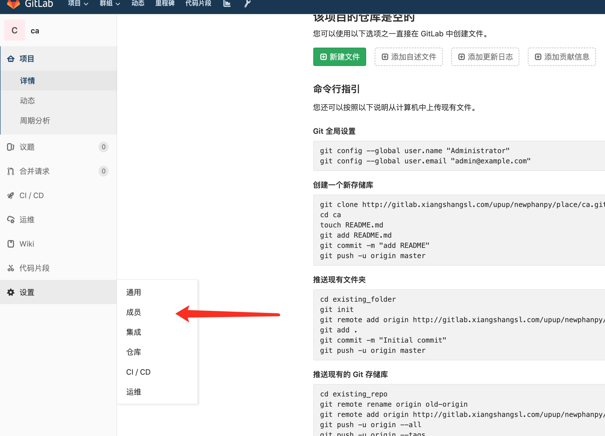

配置项目自动集成打包部署
在项目中添加打包插件
在pom文件中添加
<build>
<plugins>
<plugin>
<groupId>org.springframework.boot</groupId>
<artifactId>spring-boot-maven-plugin</artifactId>
</plugin>
<plugin>
<groupId>com.spotify</groupId>
<artifactId>docker-maven-plugin</artifactId>
<version>1.2.0</version>
<executions>
<!--执行 mvn package 时 自动 执行 mvn docker:build-->
<execution>
<id>build-image</id>
<phase>package</phase>
<goals>
<goal>build</goal>
<!--<goal>push</goal>-->
</goals>
</execution>
</executions>
<configuration>
<serverId>docker-hub</serverId>
<!--镜像名称-->
<baseImage>adoptopenjdk/openjdk11</baseImage>
<imageName>registry-vpc.cn-shenzhen.aliyuncs.com/phanpy/${project.name}</imageName>
<image>${project.artifactId}</image>
<imageTags>
<imageTag>${project.version}</imageTag>
<imageTag>latest</imageTag>
</imageTags>
<env>
<TZ>Asia/Shanghai</TZ>
<ACTIVE>test</ACTIVE>
</env>
<cmd>java -jar -Dspring.profiles.active=$ACTIVE ${project.build.finalName}.jar</cmd>
<resources>
<resource>
<!-- 编译jar路径 -->
<!--<targetPath>/</targetPath>-->
<!--编译jar 所在文件夹-->
<directory>${project.build.directory}</directory>
<!--编译的jar 名称-->
<include>${project.name}-${project.version}.jar</include>
</resource>
</resources>
</configuration>
</plugin>
</plugins>
</build>
在gitlab创建项目
gitlab 地址 https://gitlab.xiangshangsl.com/
1. 在gitlab上创建一个项目
2. 创建一个新内部项目
需要根据类型选择群组
3. 创建成功后根据提示 推送项目到git
如上传失败 提示无权限

添加用户权限到项目
再进行上传
添加jenkins打包任务
地址 http://jenkins.cloud.xiangshangsl.com/
新建任务
打开gitlab的项目地址 获取到git地址
填入下图的位置

构建触发器点击高级选项
先复制webhook地址
然后点下图的按钮 重新生成一个token 并复制出来
再打开gitlab项目地址
点击集成 然后填入上面获取的URL和token
集成k8s ()
打开k8s的项目 点击CI/CD集成
复制出删除pod的脚本
粘贴到下面框里(如不需集成 要清空删除pod命令)
然后保存 并应用